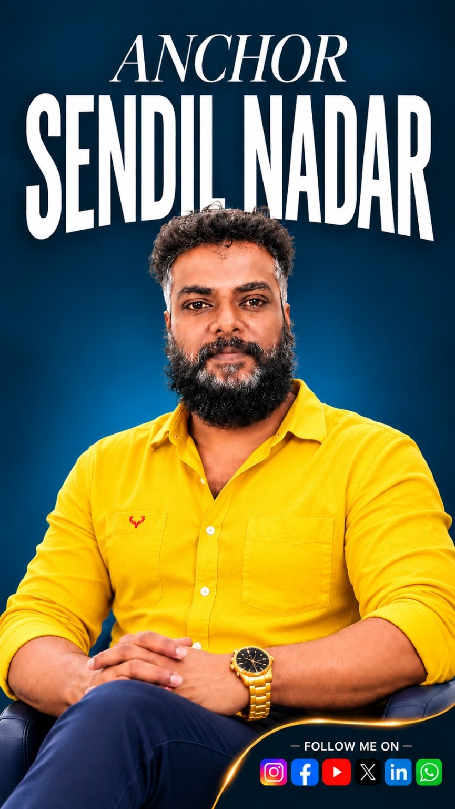

The voice. The energy. The experience.
ANCHOR
SENDIL NADAR
Professional hosting • Live events • Real conversations. Bringing every stage and story to life.

Anchor Sendil Nadar
01 / Live Events
MAKE EVERY
MOMENT LIVE
Engaging stage presence for celebrations, public events and unforgettable audiences.
02 / Corporate
PROFESSIONAL
STAGE HOSTING
Polished, energetic and audience-first hosting for corporate events and launches.
03 / Weddings & Celebrations
YOUR DAY.
YOUR STORY.
Warm and memorable hosting for weddings, receptions and family celebrations.
04 / Real Podcast
REAL PEOPLE.
REAL STORIES.
Meaningful conversations in Marathi, Tamil, Hindi, English and more Indian languages.
05 / Public & Cultural
CELEBRATE
OUR CULTURE
Connecting communities through culture, festivals and stage experiences.
06 / Portfolio
THE JOURNEY
CONTINUES
Explore collaborations, hosting highlights and upcoming projects with Anchor Sendil Nadar.